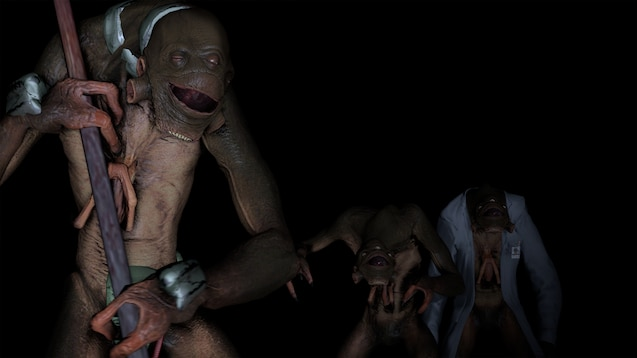

Vortigaunts
Os Vortigaunts são uma espécie alienígena inteligente, lançada na Terra a partir do mundo fronteiriço Xen durante tempestades de portais pouco antes da ocupação do Império.
Não existe um processo de entrada a esta facção dentro da personagem. Os potenciais candidatos serão contactados pela equipa de administração com base na sua capacidade de desempenhar um papel coerente.
Histórico
Tendo suportado a escravatura tanto na Terra como em Xen, os Vortigaunts são uma espécie refugiada, a maioria com o simples objetivo de sobreviver. Uma caraterística distintiva da sua anatomia facilita a ligação com a “vortessência”: uma força vital invisível que tece o universo. Através da gestão do seu “equilíbrio vortal”, muitos Vortigaunts treinaram-se para manipular esta energia.
A maioria dos Vortigaunts foram abatidos ou re-escravizados durante e após a invasão; um componente imprevisível e uma ameaça potencial à rede terrestre do Império. Se algum permanecesse, ele se vagaria pela região selvagem agora desabitada, aguardando a oportunidade de libertar seus parentes da escravidão.
Vortigaunts Escravizados
Os Vortigaunts Escravizados vivem na miséria ao lado dos habitantes humanos dos centros urbanos do Império, designados para executar tarefas braçais e laboriosas com pouco para sustentá-los. Os grilhões impostos a eles interrompem sua habilidade inata de aproveitar a vortessência, praticamente os deixando sem qualquer ligação à sua força vital ou parentes. Como resultado desse isolamento, Vortigaunts Escravizados obedecem estoicamente e evitam a visibilidade diante da resistência prematura e fútil. Todos sabem que sua hora chegará, mais cedo ou mais tarde.
Os Vortigaunts Escravizados devem lembrar-se destes fundamentos para guiar o seu roleplay:
- Seus grilhões o tornam desconectado da vortessência e da "consciência" Vortigaunt. Você está sozinho e separado de seus professores vitais, estudiosos e parentes - os únicos que estão com você compartilham sua mesma miséria.
- Você está em um estado perpétuo de perigo e servidão. Faça o melhor para se preservar sempre que for aplicável.
- O seu povo foi escravizado durante eras e compreende que é melhor obedecer do que tornar-se um alvo. Atos fúteis de desobediência só servem para te matar e prejudicar os seus parentes à sua volta.
Regras
Estas regras devem ser seguidas por todos os Vortigaunts Escravizados para preservar a integridade da fação. A violação resultará na remoção da facção.
0. Use o bom senso. Não interprete de uma forma que seja obviamente inadequada para um Vortigaunt.
1. Enquanto estiver agrilhoado, está proibido de ir contra as ordens diretas das Forças Overwatch ou de conspirar ativamente contra o Império.
2. Não saia do seu caminho para causar problemas ou caos sem motivo.
3. Você deve permanecer no personagem e conduzir sua interpretação profissionalmente e com um bom padrão.
| FORMAS DE VIDA ALIENÍGENAS |
| Vortigaunts |
|  |
| Escravizados pelo Império ou vivendo nas áreas periféricas, os Vortigaunts são uma espécie em vias de extinção. |